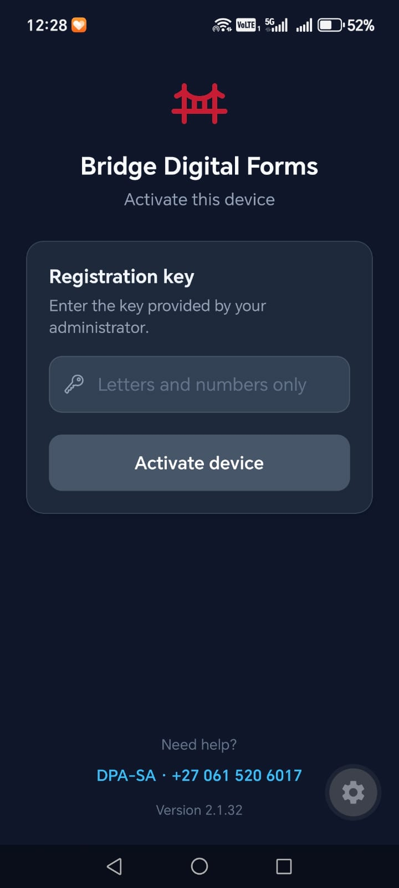
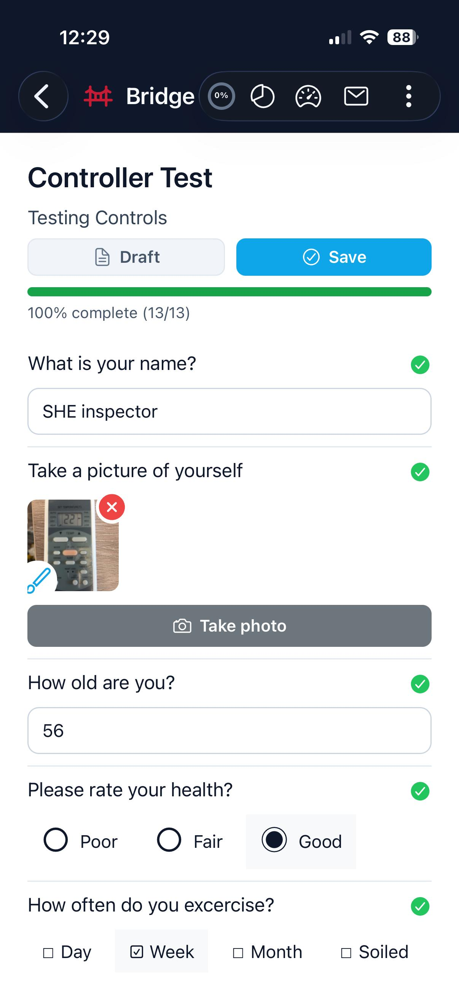
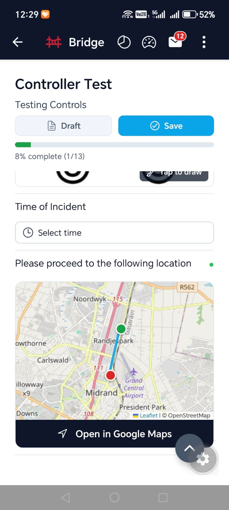
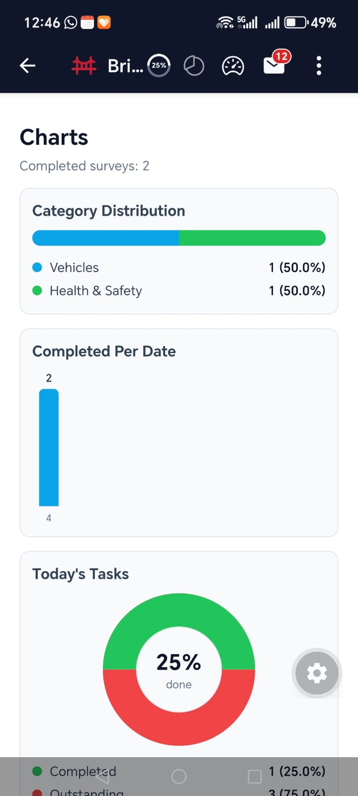

Build Smarter Forms
Use our simple drag-and-drop Form Builder to customize your forms. Unlike paper, your forms can now validate answers, collect rich media, and reference live data resources.
Bridge Digital Forms is a mobile data capture app that can be easily tailored to suit multiple remote data capturing applications. Any type of digital form can be created enabling a user to remotely capture embedded Photos, Video, Text, Signatures, GPS Locations, Barcodes, Maps, Dates and OCR.
Besides forms being easily accessible online and offline, forms can even be pushed to a user, so initiating a task with potential real-time information gathering and reporting.
Download the app
From device activation to forms, location capture, and dashboards — built for real field work.




Use our simple drag-and-drop Form Builder to customize your forms. Unlike paper, your forms can now validate answers, collect rich media, and reference live data resources.
Your teams can complete and submit forms anywhere — even without an internet connection. No more missing paperwork.
Information is delivered exactly where you need it. Flag issues for immediate attention. Send responses directly to your data systems to eliminate data re-entry.
When data is captured and transmitted back to your central information hub, it can then be used in a variety of ways, enabling you to create all kinds of improved Workflows, Reports, Business Intelligence Dashboards, Alerts and Notifications – and all in real-time. Stored securely in the cloud this central hub of information can be accessed, shared and integrated with any current systems you have.
Available on all types of mobile device and covering every industry, Bridge Digital Forms has enabled many companies to realise significant cost savings and improved statutory compliance.
Built for real field conditions — secure access, rich capture, offline reliability, and the operational tools teams need day to day.
Bridge Digital Forms delivers measurable outcomes for field teams, managers, and the business — not just features on a device.
Faster completion with reusable digital workflows and reduced admin overhead.
Required-field logic, controlled input types, and validation reduce bad or incomplete submissions.
Offline capture and queued sync ensures work continues even with poor connectivity.
Timestamps, logs, completion records, and structured evidence — photos, signatures, and files.
Near-real-time updates, notifications, and status-based queues for managers and coordinators.
Robust sync/error handling and trace logs make issues easier to diagnose and resolve.